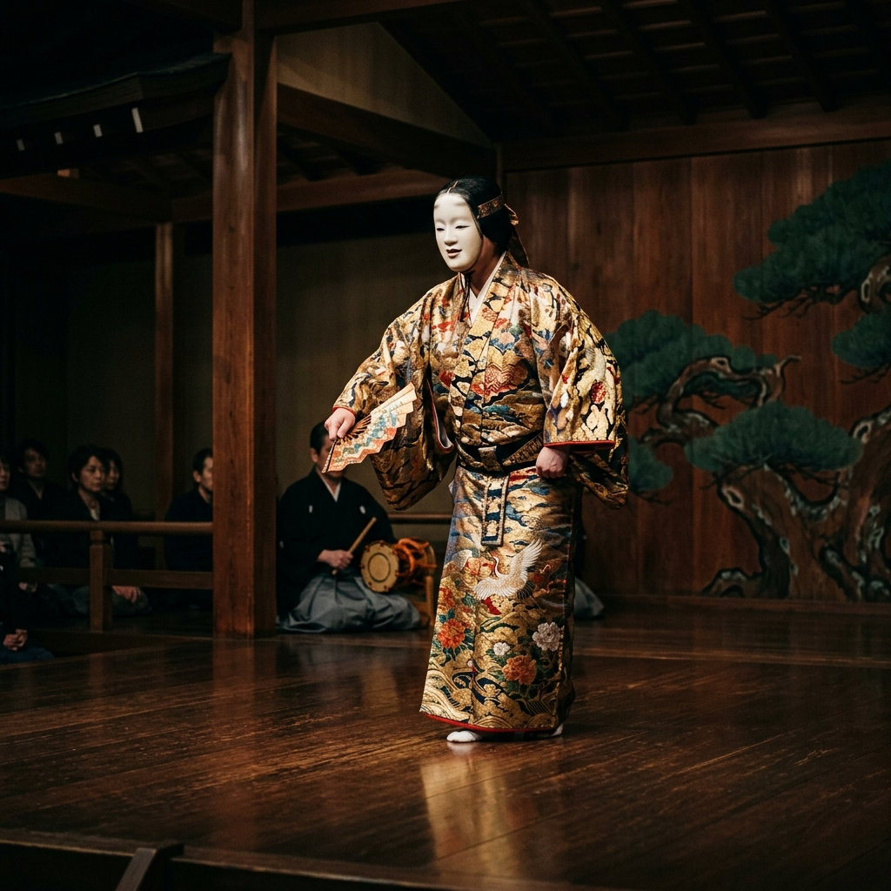
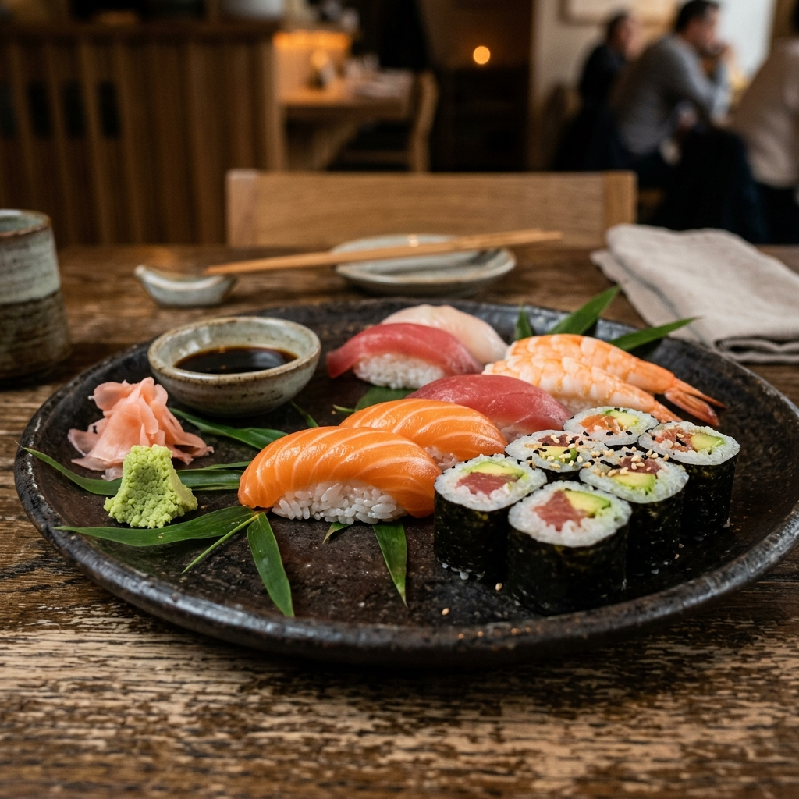
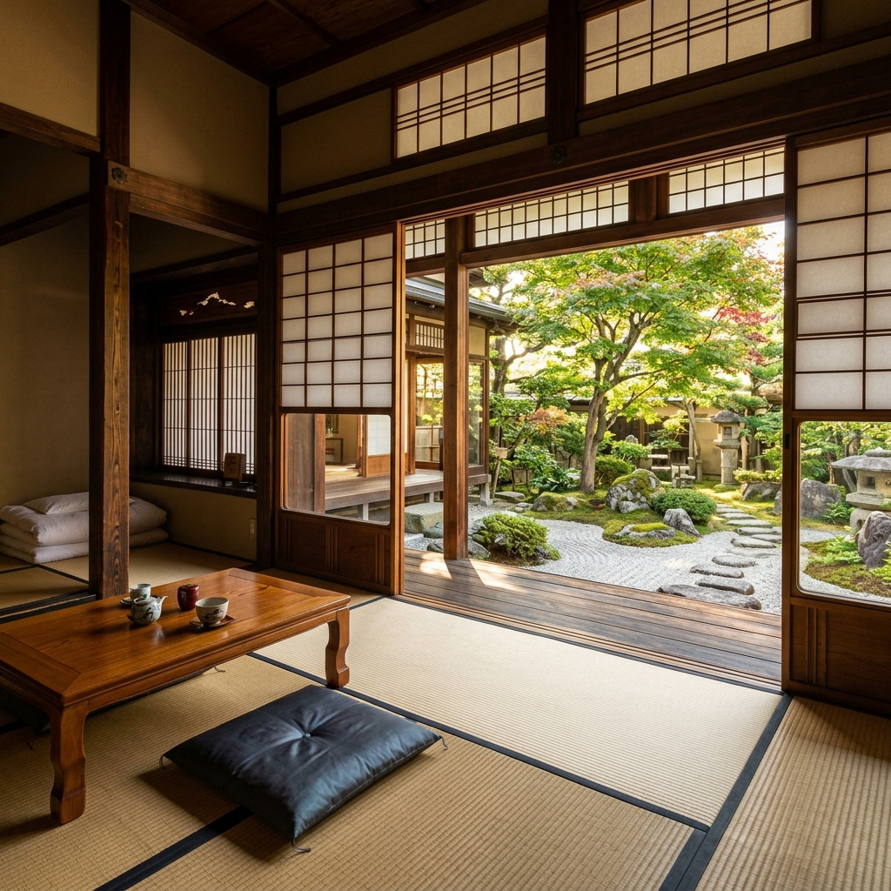

pulau utama
Honshu, Hokkaido, Kyushu, dan Shikoku merupakan empat pulau yang membentuk inti geografis Jepang.
Membaca Jepang melalui akar sejarah, ruang yang tenang, dan ritme musim, hingga ke kehidupan masa kini.

Angka-angka berikut bukan kesimpulan, melainkan titik awal untuk memahami kedalaman budaya Jepang.
Honshu, Hokkaido, Kyushu, dan Shikoku merupakan empat pulau yang membentuk inti geografis Jepang.
Setiap prefektur memiliki cita rasa, festival, dan dialek yang khas, sehingga citra Jepang tidak pernah seragam.
Pengelompokan regional membantu menjelaskan perbedaan karakter antara Hokkaido, Kansai, Kyushu, hingga Okinawa.
Lapisan budaya Jepang terbentang dari komunitas Jomon hingga era Reiwa, dan tetap berlanjut hingga kini.
Sebagian disajikan sebagai linimasa, sebagian lain lebih hidup dalam format kartu, dan sisanya mengajak pembaca untuk belajar secara aktif.

Linimasa vertikal yang membaca pergeseran kekuasaan dari komunitas awal, istana, era samurai, kota dagang, hingga negara modern.
Buka linimasa
Karya, pertunjukan, dan instrumen yang memperlihatkan keterkaitan antara seni rupa, panggung, dan bunyi dalam tradisi Jepang.
Lihat galeri
Pakaian tradisional dan masakan daerah memperlihatkan bagaimana musim, formalitas, dan letak geografis ikut membentuk kebiasaan harian.
Telusuri busana & rasa
Tatami, fusuma, shoji, engawa, dan beragam tipe hunian dapat ditelusuri secara bertahap melalui satu eksplorer ruang yang ringkas.
Masuk ke ruang tradisional
Mode pilihan ganda untuk memeriksa pemahaman, dan kartu belajar untuk mengulang istilah dengan ritme yang lebih ringan.
Mulai latihanSetiap slide menampilkan satu tempat penting, satu foto penuh lebar, dan keterangan ringkas yang tetap mudah discan.

Warisan dunia UNESCO dan salah satu kastil pre-modern paling terawat, dikenal lewat struktur pertahanan lengkap dan siluet putihnya.
Sejarah dapat menjadi titik awal untuk memahami konteks besarnya. Halaman seni, kuliner, arsitektur, dan kuis tersedia bagi pembaca yang lebih nyaman menempuh jalur tematik.